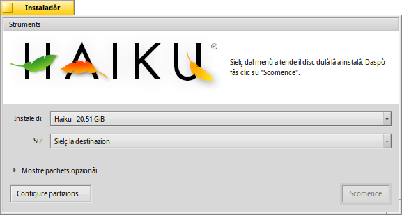

Instaladôr
Instaladôr
| Deskbar: | ||
| Posizion: | /boot/system/apps/Installer | |
| Impostazions: | nissune |
L'instaladôr al ven doprât par copiâ Haiku suntu altri volum. Tu puedis doprâlu par clonâ la tô version di Haiku in esecuion - cun dut il software instalât e ducj i dâts e lis impostazions. E, logjic, tu lu dopris pe instalazion iniziâl dopo vê inviât dal CD di instalazion o de clavute USB, viôt la Vuide online ae instalazion.
Sul moment dal inviament, Instaladôr al visualize un barcon di inviament cun informazions impuartantis. No je une di chês EULA cence sens che tu sês abituât a fâ clic daurman, cheste e aferme:
Chest al è software di cualitât beta. Fâs copiis di backup o tu patirâs lis consecuencis!
L'instaladôr al à bisugne di une partizion preparade. Tu puedis doprâ Gjestion disc par creâ e formatâ une partizion, ma ancjemò no ridimensionâ partizions esistentis. Par chest lavôr tu scugnis doprâ un CD Live di GParted o un strument simil, pal moment.
- Haiku al pues jessi zontât a man sul gjestôr di inviament GRUB. La maniere esate par fâlu e je disponibile te vuide in rêt.
Une volte che tu âs acetât cun , ti si presente il barcon principâl:

Tal prin menù a tende tu puedis sielzi la sorzint di instalazion. E pues jessi la instalazion atuâl di Haiku o e pues rivâ di un CD di instalazion o une unitât USB, e vie indenant.
Il secont menù a tende al specifiche la destinazion de instalazion. Cheste partizion/volum di destinazion a vignarà sorescrite dal dut e e à di sei preparade in anticip cuntun strument di partizionament come GParted.
Fasint clic sul piçul widget par pandi Mostre pachets opzionâi, se disponibii, tu podarâs sielzi di instalâ pachets adizionâi al sisteme Haiku di base.
Tu varessis di fâ un ultin control se tu âs sielt la juste destinazion prime di tacâ il procès di instalazion. Fâs clic su par vierzi Gjestion disc e vê une viodude sui nons e la disposizion dai volums e des partizions disponibii.
al tache la procedure di instalazion, che di fonde al copie lis cartelis /home/ e /system/ sul volum di destinazion e lu rint inviabil.
 Struments
Struments
Ae fin de procedure di instalazion, la partizion e ven rindude inviabil in automatic. Dut câs, al pues sucedi che cualchi altri sisteme operatîf o strument di partizionament (par erôr) al sorescrivi il setôr di inviament dal to volum di Haiku. In chest câs, invie il to CD di instalazion e fâs partî l'Instaladôr. Selezione la partizion di inviament di Haiku dal menù e selezione dal menù par rindilu di gnûf inviabil.
The next item in the menu is used to that puts a menu in the boot sector to choose what operating system to boot. See topic BootManager for more information.
You don't need to run the BootManager if you already use a bootmanager like GRUB, in which case you have to add Haiku manually (see above), or Haiku runs exclusively on your machine.
If you use UEFI to boot your system instead of going the BIOS/MBR route, you can use to copy the EFI loader from the boot/install medium to your prepared partition that you select from the submenu. That EFI system partition needs to be FAT32-formatted on a GPT-initialized disk with enough free space.